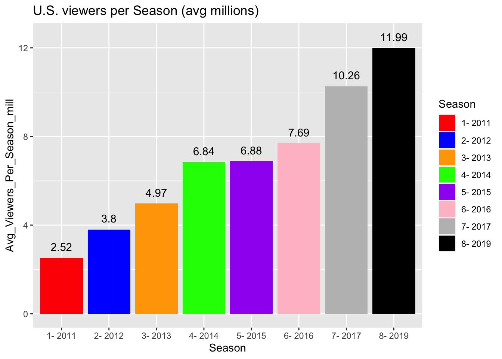

```{r}
library(ggplot2)
GOT <- data.frame(
Season = c("1- 2011", "2- 2012", "3- 2013", "4- 2014", "5- 2015", "6- 2016", "7- 2017", "8- 2019"), Avg_Viewers_Per_Season_mill = c(2.52, 3.8, 4.97, 6.84, 6.88, 7.69, 10.26, 11.99))
```Quarto Assignment 1
Game of Thrones
Brief Description
Game of Thrones is an American fantasy drama television series created by David Beinoff and D.B. Weiss for HBO. It is an adaptation of A song of Ice and Fire, a series of fantasy novels by George R. R. Martin, the first of which is A Game of Thrones. The show was shot in the United Kingdom, Canada, Croatia, Iceland, Malta, Morocco, and Spain. It premiered on HBO in the United States on April 17, 2011, and concluded on May 19, 2019, with 73 episodes broadcast over eight seasons.

Viewership
Game of Thrones was considered a ratings success for HBO throughout all eight seasons. The show premiere was watched by 2.2 million, and the first season averaged 2.5 million viewers per episode. For its second season, the series had an average gross audience of 11.6 million viewers. The third season was seen by 14.2 million viewers, making Game of Thrones the second-most-viewed HBO series (after The Sopranos). HBO said that Game of Thrones’ average gross audience of 18.4 million viewers (later adjusted to 18.6 million) had passed The Sopranos for the viewership record. The season five episode “The House of Black And White” was simulcasted in 173 countries, becoming the “largest TV drama telecast” according to Guinness World Records.
| Season | Average Viewers Per Seaon (millions) |
|---|---|
| 1- 2011 | 2.52 |
| 2- 2012 | 3.8 |
| 3- 2013 | 4.97 |
| 4- 2014 | 6.84 |
| 5- 2015 | 6.88 |
| 6- 2016 | 7.69 |
| 7- 2017 | 10.26 |
| 8- 2019 | 11.99 |
```{r}
GOT_VIEWS <- ggplot(GOT, aes(x = Season, y = Avg_Viewers_Per_Season_mill, fill= Season))+
geom_bar(stat = "identity")
GOT_VIEWS + scale_fill_manual(values = c("red", "blue", "orange", "green", "purple", "pink", "grey", "black")) + labs(title = "U.S. viewers per Season (avg millions)", x = "Season", y = "Avg_Viewers_Per_Season_mill")+ geom_text(aes(label = signif(Avg_Viewers_Per_Season_mill)), nudge_y = 0.5)
```
Review of Viewership
From the graph above, we can see a constant increase in viewership after each season. Between when the first season was aired in 2011 and when the last season was aired in 2019, there has been a percentage increase of 375.4%. Some interesting insight shows that the percentage change in viewings between 2011 and 2012 is the highest among all the years, indicating a significant increase in viewership in that year. Which shows that after people realized how nice the series was, more people got interested and decided to be a part of it. Meanwhile, the percentage change in viewings between 2014 and 2015 is the lowest, suggesting nothing major really happened in season 4. The overall trend shows an increase in viewings over time, with some fluctuations in growth rate.